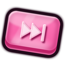

Skip Dat
Every music app's queue, one Alt + scroll away.
Playing now
Looking for music…
Shortcut hold it and scroll
Keyboard
Mouse
A plain click or drag with that button still works as usual. It only becomes the shortcut when you scroll while holding it.
- Hold Alt and scroll anywhere: the wheel opens by your cursor. One notch is one song.
- Let go to play the song in front. If you stayed on the song that's playing, nothing changes.
- While holding: click a song to play it, use ⏮ ⏯ ⏭, or click another app's name to switch to it.
- Arrow keys move between songs and apps, Space plays or pauses, Enter plays the song in front.
- Esc or a click anywhere else closes it without changing anything.
Look
Skin
Browser companion Not connected
For YouTube Music, YouTube and SoundCloud in Chrome, Edge, Brave or Opera: it lets Skip Dat see their whole queue (mixes and radio included) and play any song in it. Without it, music in your browser still shows up, but only the song that's on.
- Open
chrome://extensionsin a new tab (Edge:edge://extensions). - Turn on Developer mode.
- Click Load unpacked and choose the browser-companion folder.
- Reload any music tab that's already open.
Options
Performance modeFor gaming and slower PCs: no blur, glass, shadows, animations or album art. The carousel uses much less of your graphics card and processor.
Pause other music when I pick a songSo only one thing plays at a time.
Start with WindowsSkip Dat waits in the tray, ready for the shortcut.
Spotify's upcoming songs optional
Windows doesn't share what Spotify plays next. To see it, connect a Spotify developer app (Spotify requires its owner to have Premium).
- Open the Spotify developer dashboard, create an app (any name), tick Web API.
- Add this Redirect URI:
http://127.0.0.1:8898/callback - Paste the app's Client ID, then connect.